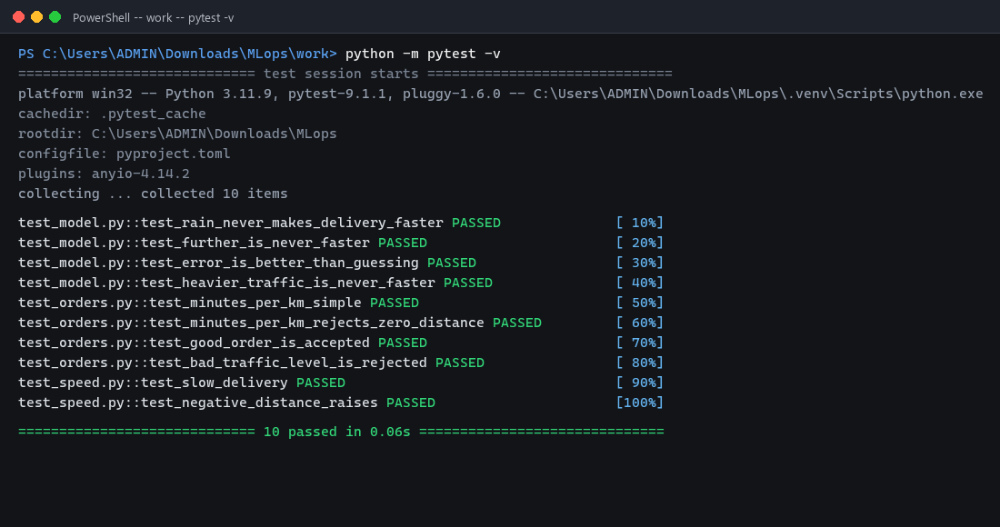

Settings in a File, Bugs Caught by a Robot · SCSE3040 MLOps
# Settings for the delivery-time model.
# Change values here, never in the code.
data:
path: ../data/delivery_times.csv
features:
- distance_km
- prep_time_min
- traffic_level
- rain
target: delivery_min
split:
test_size: 0.2
seed: 42
model:
name: linear_regression
training:
max_rows: 300
Automated Testing with pytest · Refactoring Verification

config.yaml, the package produces the identical honest MAE of 1.92 minutes on the complete dataset (and 2.18 minutes when restricted to the configured 300-row limit in Task T1).